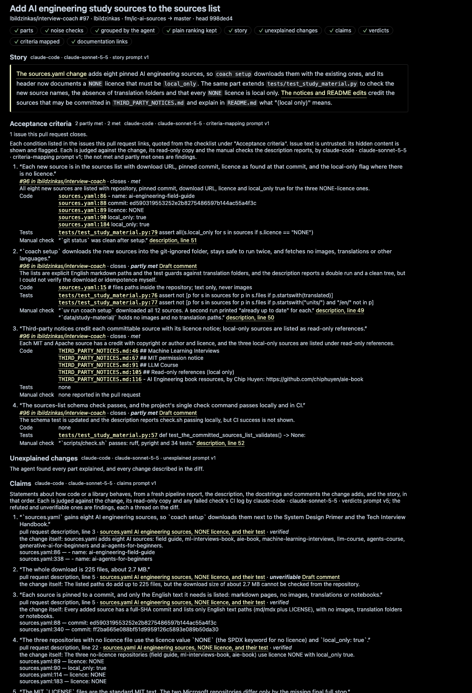

second-look v1.1 · issues #124 · #126 · #122 · #123 · #125 · approved design
One flow, in the order a reviewer meets it, built from the picks below and the recommendations kept for everything else. The side bar is one webview carrying the richer step path. The overview uses the dashboard-and-tables style, and its contents rail jumps to each section. Real content from the review of interview-coach #97; rows marked example are invented. Every decision is listed in the appendix.
The reviewer clicks the Second Look icon for the first time. Step 1's card is open with the setup form. Nothing has been chosen, so the status bar shows the defaults that would run, effort included.
The form in step 1's card (shown), with the four-value quick pick for fast changes from the status bar. Not chosen: the four quick picks everywhere with no form, and the form everywhere with the status bar opening step 1.
agent, agentModel, agentEffort and agentAccount to user settings. “Use the defaults” keeps Pi. Either way the card folds to one line with a change link.Step 1 folds to one line. Step 2 lists the reviewer's open pull requests from GitHub (the editor's own sign-in), each with a short summary, review state and size. Typing filters; pasting a URL into the same box starts that review.
Clicking Review opens the overview and starts the stages. The plain parts and the story land first, and the reviewer can start reading while the agent keeps checking. Here stage 7 of 9, the verdicts, is running. The times are illustrative.
⟳ 7/9 Second Look: Claude Code · claude-sonnet-5-5 · high, visible with the side bar closed.Step 3 ticked itself when the overview was read. Step 4 lists the parts by importance with their checkboxes. Open next part opens the multi-file diff for the first unreviewed must-review part, with its banner (#91). The agent is still working on the criteria (stage 8).
coach setup downloads; the test pins it. · new code · test changed · 3 files mention these namesExplainWhat covers this?Verify a claimReviewedThe review has finished. Step 5 lists its finding with Draft comment and Open buttons; the verified claims fold into one line. In the overview the reviewer clicked Claims in the rail, so the page scrolled there. Ranking fell back to the plain one, the only fallback in this review, so the finished notice says why.
file:line chip opens the line read-only.Step 6 lists the criteria that are not fully met, then the unexplained changes (none here). Clicking Acceptance criteria in the rail scrolls the overview to its table. The first finding row is open.
second-look.criteriaHeading) can be changed from this card's menu.“Draft comment” on a finding opens the agent's short draft in a thread on the exact line. The reviewer edits it and adds it to the review. Step 7 gathers every pending comment and draft, each with a discard button.
Step 8 (or the title button) opens the Send review page, the design already chosen: every comment for one last pass, the overall comment, the review type and one Submit. Afterwards step 8 links to the review on GitHub.
Every comment below goes to GitHub as one review, pinned to head 998ded4. Edit or drop any of them first.
picked chosen among the options · recommended recommended and kept · adapted changed to fit the picks · moot no longer applies
| # | Decision | As built | Source |
|---|---|---|---|
| 1 | Side bar architecture | The whole side bar as one webview, with the step path's states and actions on cards | picked |
| 2 | Step ticks | Automatic where measurable (setup, review open, story read, every part reviewed, no draft undecided, sent). A tick box for claims and criteria. New commits re-open the affected steps. | recommended |
| 3 | Guidance | Ordered and never locked. The current step's card is open and the rest fold to one line. | adapted |
| 4 | Findings in the side bar | Finding cards with Draft, Open, Verify and Fetch buttons. Confirmations fold. | adapted |
| 5 | #124 ticket cut | (a) Webview side bar shell with steps 1–4; (b) steps 5–6 finding cards; (c) steps 7–8 comments and send; (d) settings and asks on the cards, with the accessibility pass | adapted |
| 6 | Setup surface | A form in step 1's card, plus the quick-pick summary from the status bar. Chosen over quick picks only and a form everywhere. | picked (B, adapted) |
| 7 | First open | Step 1's card is open by itself on first open; “Use the defaults” dismisses it | adapted |
| 8 | Four steps or combined | Not applicable: the form shows all four fields at once | moot |
| 9 | Re-open | Step 1's change link opens the form. The status bar opens the four-value summary quick pick. | adapted |
| 10 | Default effort text | · default effort | recommended |
| 11 | Untested marker | Beaker icon in the status bar; the full warning in the tooltip | recommended |
| 12 | “Signed in” | Probe facts plus Claude Code's login source; the first review confirms | recommended |
| 13 | Confirmation | Not applicable: the form's Save button confirms, and the card folds to show the result | moot |
| 14 | Status bar before any choice | The defaults with a gear: ⚙ Second Look: Pi · default model · default effort | recommended |
| 15 | Where progress shows | The side bar (bar, strip, spinner on the step) and the overview (stage list, placeholders) | picked |
| 16 | Times | Elapsed for the running stage, durations for finished ones, total at the end; no estimates | recommended |
| 17 | Status bar during a review | ⟳ 7/9 Second Look: agent · model · effort | recommended |
| 18 | End of review | The strip and status bar always; a notification only on fallback or failure | recommended |
| 19 | Stop | A Stop review title button; needs a small engine cancel | recommended |
| 20 | Overview style | Dashboard and tables (S3), with finding rows that open in place to show reason and evidence | picked |
| 21 | Order | Findings first in every table; confirmations below | recommended |
| 22 | Wide layout | A bounded column plus a contents rail of clickable links with scroll-spy and coloured counts | picked + clickable rail |
| 23 | Evidence | file:line chips with the quoted line, grouped Code / Tests / Manual inside an opened row; “+3” in the collapsed row | adapted |
| 24 | Colour source | VS Code theme colours, with AA-checked fallbacks | recommended |
| 25 | Pull request picker | A list in the side bar with a short description, review state and size | picked |
| 26 | Groups | Requested (sorted by waiting time, last-look flag) → yours → involving → this repository; each pull request appears once | recommended |
| 27 | Signed out | A sign-in card; pasting a URL still works | recommended |
| What (today's place) | Where in the side bar |
|---|---|
Choose agent and model (new) · agent, agentModel, agentEffort, agentAccount (Settings) | Step 1 card form; status bar quick pick |
| Review pull request (palette) | Step 2 list, its URL box and its Review buttons |
| Stop the review (new) | Title bar ⏹ while running |
| Open overview (view title) · description, CI, documentation, stamps (overview) | Step 3 card button; title 📖; overview rail |
| Open part · reviewed checkbox (tree) | Step 4 part rows and their checkboxes; the diff banner |
| Open all parts · filter changed since last look (view title) | Step 4 buttons |
| Why this matters · Explain · Verify · What covers this? (part menus) | Step 4 Ask… button and the part row's ⋯ menu; the diff banner |
| Comment on this part… (part menu) | Part row ⋯ menu; step 7 hint |
mirrorViewedToGitHub (Settings) | Step 4 card ⋯ menu toggle |
| Fetch / Decompile library · open cited file (thread links) | Step 5 finding cards |
| Draft comment (thread, overview) | Step 5 and 6 finding cards |
| Criteria · issue links · unexplained changes (overview, tree badge) | Step 6 card |
criteriaHeading (Settings) | Step 6 card ⋯ menu |
| Add comment (gutter) · discard comment · add/discard draft (threads) | Editor gutter (unchanged); step 7 rows with discard, add and discard buttons |
| Submit review… (view title, palette) | Step 8 button; title 🚀 |
| Open Second Look settings (new) | Title ⋯ menu |
| Documentation hover (diff) | Unchanged; the list is in the overview rail |
Every VS Code command stays registered, so the Command Palette and keybindings keep working alongside the side bar.

Add AI engineering study sources to the sources list
The sources.yaml change adds eight pinned AI engineering sources, so coach setup downloads them with the existing ones, and its header now documents a NONE licence that must be local_only. The notices and README edits credit the sources that may be committed in THIRD_PARTY_NOTICES.md and explain in README.md what "(local only)" means.
| # | State | Claim | Where it is made |
|---|---|---|---|
| 1 | checking | `sources.yaml` gains eight AI engineering sources… | description:3 |
| 2 | checking | The whole download is 225 files, about 2.7 MB. | description:5 |
| 4 more being checked | |||
| # | Verdict | Claim | Evidence |
|---|---|---|---|
| 2 | unverifiable | The whole download is 225 files, about 2.7 MB. ▾ | the change itself |
The listed paths do add up to 225 files, but the download size of about 2.7 MB cannot be checked from the repository. Made indescription:5pull request description · part sources.yaml AI engineering sources…
Draft commentVerify again | |||
| 1 | verified | `sources.yaml` gains eight AI engineering sources, so `coach setup` downloads them… | sources.yaml:86 +1 |
| 3 | verified | Each source is pinned to a commit, and only the English text it needs is listed… | sources.yaml:88 +1 |
| 4 | verified | The three repositories with no licence file use the licence value `NONE` and `local_only: true`. | sources.yaml:89 +3 |
| 2 more verified ▸ | |||
| # | State | Criterion | Evidence |
|---|---|---|---|
| 2 | partly met | `coach setup` downloads the new sources into the git-ignored folder, stays safe to run twice, and fetches no images, translations or other languages. ▾ | sources.yaml:15 +4 |
The lists are explicit English markdown paths and the test guards against translation folders, and the description reports a double run and a clean tree, but I could not verify the download or idempotence myself.
Codesources.yaml:15# files paths inside the repository; text only, never images
Teststests/test_study_material.py:76assert not [p … startswith(translated)]tests/test_study_material.py:77assert not [p … "units/" … "/en/" not in p]
Manualdescription:49“downloaded all 12 sources. A second run printed "already up to date"…”
Draft comment | |||
| 4 | partly met | The sources-list schema check passes, and the project's single check command passes locally and in CI. ▸ | test…:57 +1 |
| 1 | met | Each new source is in the sources list with download URL, pinned commit, licence… | sources.yaml:86 +6 |
| 3 | met | Third-party notices credit each committable source with its licence notice… | NOTICES.md:46 +4 |